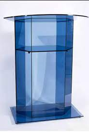

ABOUT THE CHURCH


Kenya Assemblies Of God Church (K.A.G Church) was founded by Oscar H. Thayer.
The Full Gospel Mission, as it was called then, met Sunday for gospel services
in the homes of interested people.The same group began meeting in Thayer's office
building on Cypress Street in Keene and later moved to larger quarters
in the Buffman Block.

The current K.A.G presiding Bishop in Kenya is Rev Philip Kitoto
K.A.G Thuita church is in Mt Kenya East District.
Mt Kenya East District is headed by Bishop Ben Irungu.
K.A.G Thuita church is headed by a highly annointed man of God,
Pastor James Muriranja with the help of other church deacons
Our aim is to spread the gospel to the whole world.
Pastor James Muriranja with the help of other church deacons
Our aim is to spread the gospel to the whole world.
K.A.G Thuita church is located in
Murang'a County, Mathioya sub-county,
Kamacharia ward, Thuita Location.
Murang'a County, Mathioya sub-county,
Kamacharia ward, Thuita Location.